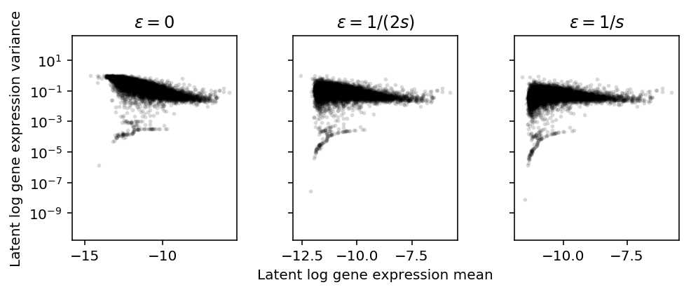
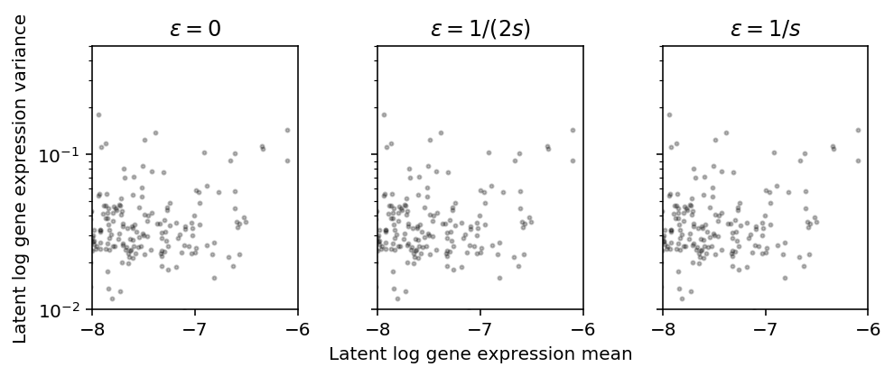
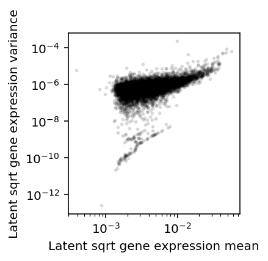

Transformations of deconvolved gene expression distributions
Table of Contents
Introduction
From the perspective of distribution deconvolution, scRNA-seq count data has a mean-variance relationship simply by convolution with a Poisson technical noise model.
Here, we investigate whether the latent gene expression distribution also has a mean-variance relationship, and what happens to it when we transform the distribution.
Setup
import numpy as np import pandas as pd import scmodes
%matplotlib inline %config InlineBackend.figure_formats = set(['retina'])
import matplotlib.pyplot as plt plt.rcParams['figure.facecolor'] = 'w'
Methods
The key idea of our approach is to deconvolve the gene expression of iPSCs assuming:
\[ x_{ijk} \sim \mathrm{Poisson}(s_{ij} \exp(\mathbf{z_i}' \beta_j) \lambda_{ijk}) \]
\[ \lambda_{ijk} \sim g_{ik}(\cdot) = \pi_{ik} \delta_0(\cdot) + (1 - \pi_ik) \mathrm{Gamma}(\mu_{ik}, \phi_{ik}) \]
From the fitted \(\hat{g}_1, \ldots, \hat{g}_p\), we can investigate whether there is a mean-variance relationship in latent gene expression.
Results
Untransformed distribution
Read the deconvolved distributions.
log_mu = pd.read_csv('/project2/mstephens/aksarkar/projects/singlecell-qtl/data/density-estimation/design1/zi2-log-mu.txt.gz', sep=' ', index_col=0) log_phi = pd.read_csv('/project2/mstephens/aksarkar/projects/singlecell-qtl/data/density-estimation/design1/zi2-log-phi.txt.gz', sep=' ', index_col=0) logodds = pd.read_csv('/project2/mstephens/aksarkar/projects/singlecell-qtl/data/density-estimation/design1/zi2-logodds.txt.gz', sep=' ', index_col=0)
Throw out the individual with evidence of contamination.
for x in (log_mu, log_phi, logodds): del x['NA18498']
Recover the mean and variance of latent gene expression per gene, per individual.
# Important: log(sigmoid(x)) = -softplus(-x) mean = np.exp(log_mu - np.log1p(np.exp(logodds))) variance = np.exp(2 * log_mu + log_phi - np.log1p(np.exp(logodds))) + np.exp(-np.log1p(np.exp(logodds)) - np.log1p(np.exp(-logodds)) + 2 * log_mu)
Plot the mean/variance relationship.
plt.clf() plt.gcf().set_size_inches(3, 3) plt.semilogx() plt.semilogy() plt.scatter(mean.values.ravel(), variance.values.ravel(), c='k', s=4, alpha=0.1) plt.xlabel('Latent gene expression mean') plt.ylabel('Latent gene expression variance')
Text(0, 0.5, 'Latent gene expression variance')
Restrict to the individual with the most cells (\(n=281\)).
plt.clf() plt.gcf().set_size_inches(3, 3) plt.semilogx() plt.semilogy() plt.scatter(mean['NA18507'], variance['NA18507'].values.ravel(), c='k', s=4, alpha=0.1) plt.title('NA18507') plt.xlabel('Latent gene expression mean') plt.ylabel('Latent gene expression variance')
Text(0, 0.5, 'Latent gene expression variance')
Log transform
Assume \(\lambda_{ijk} \sim g_{ik}(\cdot)\), as above. Plot the approximate relationship between \(E[\ln(\lambda + \epsilon)]\) and \(V[\ln(\lambda + \epsilon)]\) by first-order Taylor expansion.
\[ E[\ln(x + \epsilon)] \approx \ln(E[x] + \epsilon) - \frac{V[x]}{(E[x] + \epsilon)^2} \]
\[ V[\ln(x + \epsilon)] \approx \frac{2 V[x]}{(E[x] + \epsilon)^2} - \frac{V[x]^2}{(E[x] + \epsilon)^4} \]
Importantly, \(\epsilon\) needs to be on the same scale as \(\lambda\). But \(x \sim \mathrm{Poisson}(s_i \lambda)\), so \(\lambda\) is on the scale of \(1 / s_i\). Instead of assuming \(x_{ijk} \sim F_{ijk}(\cdot)\), assume:
\[ x_{ijk} \sim \frac{1}{n} \sum_j F_{ijk}(\cdot) \]
Then, \(E[x_{ijk}] = \frac{1}{n}\sum_j s_{ij} E[\lambda_{ijk}]\). This gives us a single scaling factor for \(g_{ik}\).
Read the metadata for the iPSCs.
annotations = pd.read_csv('/project2/mstephens/aksarkar/projects/singlecell-qtl/data/scqtl-annotation.txt', sep='\t') keep_samples = pd.read_csv('/project2/mstephens/aksarkar/projects/singlecell-qtl/data/quality-single-cells.txt', sep='\t', index_col=0) annotations = annotations.loc[keep_samples.values.ravel()]
s = annotations.loc[(annotations['chip_id'] == 'NA18507').values, 'mol_hs'].mean()
plt.clf() fig, ax = plt.subplots(1, 3, sharey=True) fig.set_size_inches(7, 3) for a, eps, t in zip(ax, np.array([0, 0.5, 1]) / s, ['0', '1/(2s)', '1/s']): a.set_yscale('log') a.scatter(np.log(mean['NA18507'] + eps), (2 * variance['NA18507']) / np.square(mean['NA18507'] + eps), c='k', s=4, alpha=0.1) a.set_title(f'$\epsilon = {t}$') ax[1].set_xlabel('Latent log gene expression mean') ax[0].set_ylabel('Latent log gene expression variance') fig.tight_layout()

Zoom in on highly expressed genes.
plt.clf() fig, ax = plt.subplots(1, 3, sharey=True) fig.set_size_inches(7, 3) for a, eps, t in zip(ax, np.array([0, 0.5, 1]) / s, ['0', '1/(2s)', '1/s']): a.set_yscale('log') a.set_xlim(-8, -6) a.set_ylim(1e-2, 10) a.scatter(np.log(mean['NA18507'] + eps), (2 * variance['NA18507']) / np.square(mean['NA18507'] + eps), c='k', s=4, alpha=0.25) a.set_title(f'$\epsilon = {t}$') ax[1].set_xlabel('Latent log gene expression mean') ax[0].set_ylabel('Latent log gene expression variance') fig.tight_layout()

Square root transform
Assume \(\lambda_{ijk} \sim g_{ik}(\cdot)\), as above. Plot the approximate relationship between \(E[\lambda^{1/2}]\) and \(V[\lambda^{1/2}]\) by first-order Taylor expansion.
\[ E[x^{1/2}] \approx (E[x])^{1/2} - \frac{V[x]}{4 E[x]^{3/2}} \]
\[ V[x^{1/2}] \approx \frac{V[x]}{2 E[x]} - \frac{V[x]^2}{16 E[x]^3} \]
plt.clf() plt.gcf().set_size_inches(3, 3) plt.semilogx() plt.semilogy() plt.scatter(np.sqrt(mean['NA18507']), variance['NA18507'] / (2 * mean['NA18507']), c='k', s=4, alpha=0.1) plt.xlabel('Latent sqrt gene expression mean') plt.ylabel('Latent sqrt gene expression variance') plt.gcf().tight_layout()

Variance effects versus mean effects
Look at